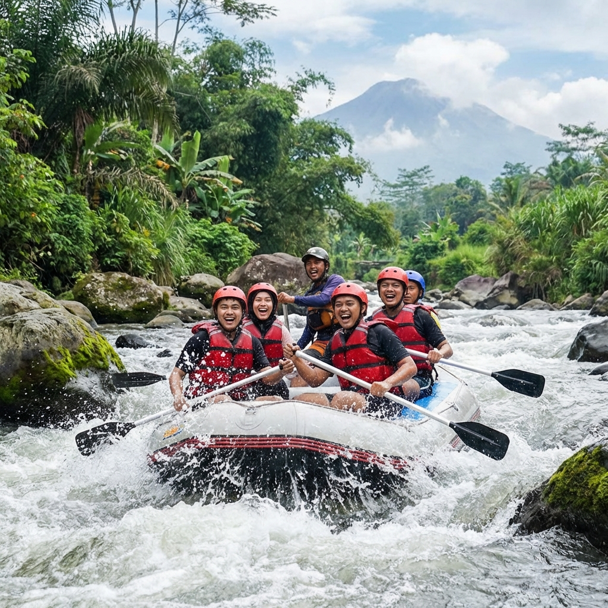

Berwisata ke Kota Batu Malang belum lengkap jika belum mencoba kegiatan outbound di lokasi-lokasi yang memiliki pemandangan menakjubkan. Saat ini, kebutuhan akan konten visual untuk sosial media sangat tinggi, sehingga pemilihan lokasi yang cantik menjadi pertimbangan utama.
1. Pine Forest Coban Talun
Hutan pinus yang tertata rapi dengan jembatan-jembatan kayu membuatnya sangat populer. Udara yang dingin dan kabut tipis di pagi hari memberikan suasana magis untuk foto tim Anda.
Baca Juga:
2. Kaki Gunung Panderman
Lokasi ini menawarkan latar belakang kegagahan Gunung Panderman. Area yang luas sangat cocok untuk kegiatan Gathering dalam skala besar dengan ribuan peserta.

3. Coban Rondo Park
Siapa yang tidak kenal air terjun ini? Area outbound di sekitarnya sangat luas dan asri. Gemericik air terjun akan menemani kegiatan team building Anda.

Kegiatan seru di tengah hutan pinus yang asri.
Kesimpulan
Pilihlah lokasi yang sesuai dengan tema kegiatan Anda. Kota Batu memiliki segala jenis medan mulai dari hutan, air terjun, hingga area pegunungan.